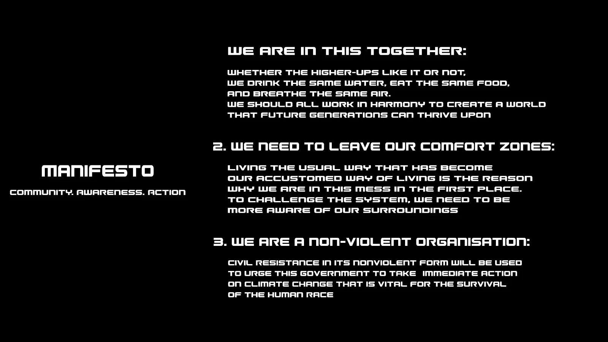
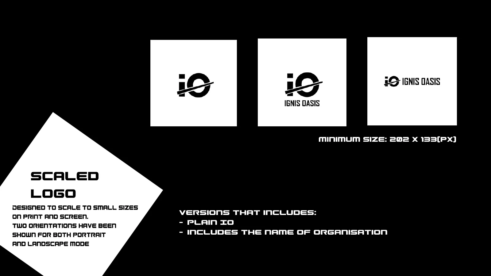
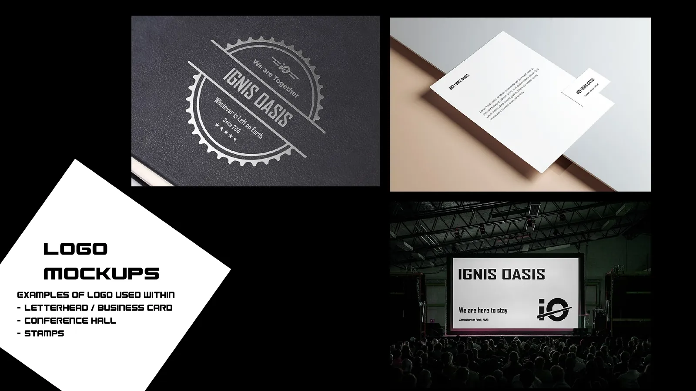
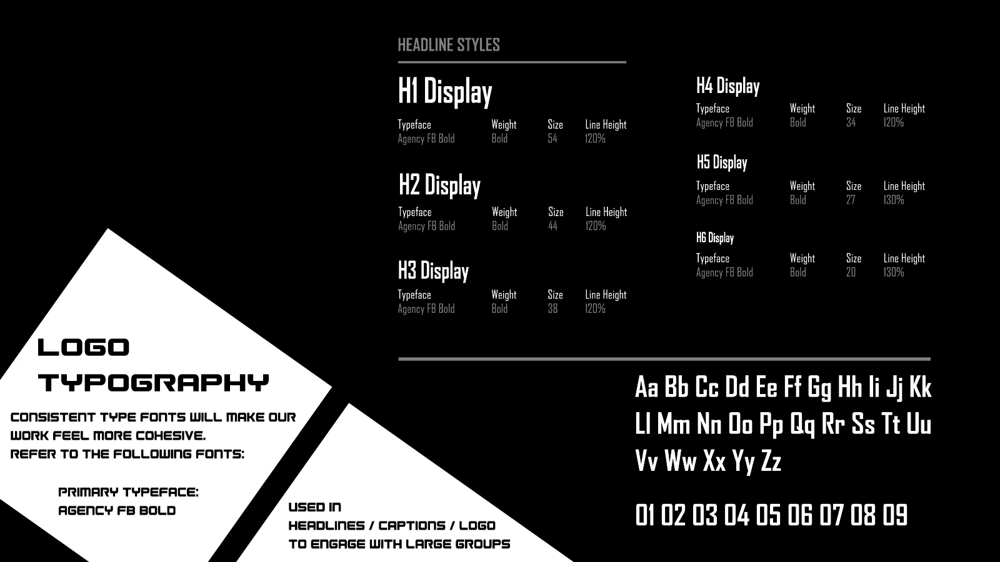
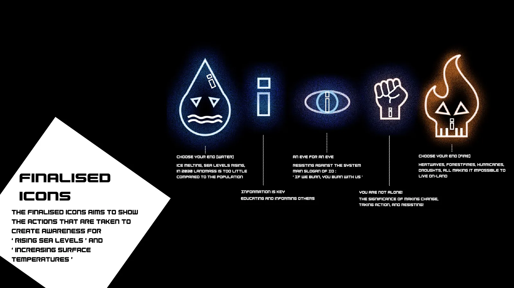
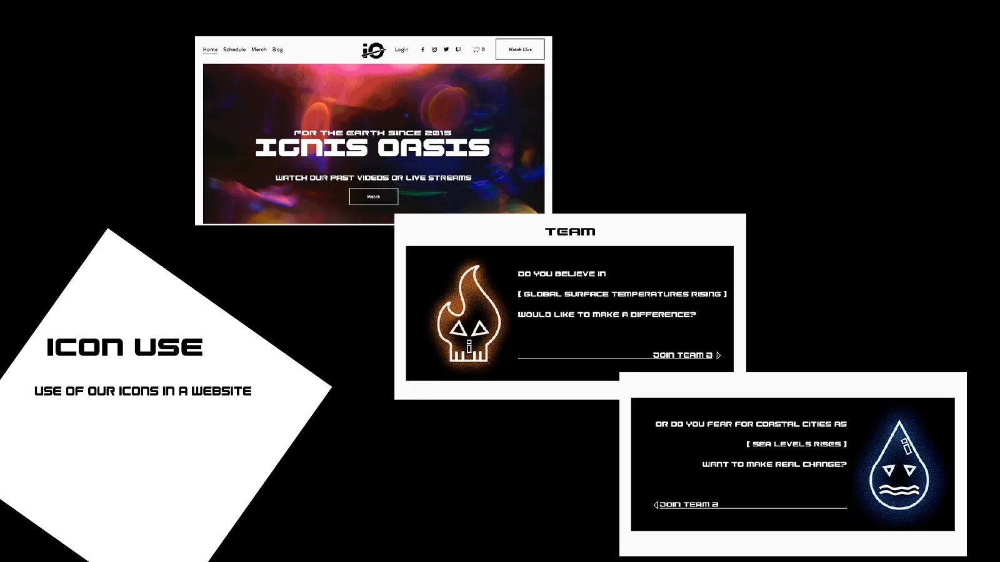

Ignis Oasis
Visual identity, icon set, poster campaign and a 22-second motion infographic for a speculative climate protest organisation.
- Role
- Sole designer
- Responsibilities
- Brand concept, visual identity, iconography, poster design, motion graphics, brand guidelines
- Timeline
- October to December 2024
- Deliverables
- Logo, icon set, five posters, motion infographic, 28-page guidelines


Overview
Ignis Oasis is a design-fiction brief: a non-violent protest organisation founded in 2015 alongside the Paris Agreement, campaigning in 2030 on rising sea levels and surface temperatures.
Every deliverable, from the logo to the posters, had to express a single line. While not a product design project, it's where I learned to build a visual system and document it so others can apply it consistently.
Brand concept
If we burn, you burn with us.
Before any visual work, I wrote the organisation's manifesto around three values and distilled it into one slogan, which became the reference point for every later decision.
- CommunityWe are in this together.
- AwarenessWe need to leave our comfort zones.
- ActionWe are a non-violent organisation.
An identity split in half
The "i" and the "o" are cut through the middle. The top half represents heatwaves and rising temperatures; the bottom half, rising oceans and melting ice.
For the final version, I recoloured the mark to match the posters and the redesigned icons.
First version

Final

First version
Final
Icons that belong to the posters
Feedback noted that the first icon set felt out of context next to the hyper-real posters. I removed the shields, kept the "i" inside all five icons so they still read as a family, and coloured them with the brand's fire orange and water blue.
- Fire
#E87C2D - Water
#47ABE5
Poster campaign
Each poster works on its own, and the five work as a set on a billboard. The display typeface, Gunship, and the secondary typeface, Futura, are distributed across the set for variety.


In context, the set is designed to work as a series on large hoardings and as single posters in transit spaces.

Motion infographic
The logo splits open into a rotating Earth, and climate incidents since the Paris Agreement are highlighted in red. The planet then fades behind two data charts, sea level and surface temperature, before the piece ends on the slogan, dissolving into a burning call to action.
Feedback that early scenes lacked the intended sci-fi atmosphere led me to rework them. I also tested sound effects but removed them, as they distracted from the data.

Brand guidelines
I documented the system in brand guidelines, 28 pages in the final version and set in the brand's own display typeface. They cover the manifesto, logo sizing and variants, colour, typography with fallbacks, icons, posters and motion, so others can keep the brand consistent.







Key learnings
- Start from the message, not the visualsFixing the slogan first gave every later decision, from the logo split to the poster copy, a clear test.
- Consistency beats individual polishThe first icons worked on their own but didn't match the posters. Redesigning them for the system made the brand more cohesive.
- Test in the final mediumEffects that worked on screen failed in CMYK print. I now check output early.
- Restraint is a design decisionRemoving sound from the motion piece made the data clearer.
Some photographic elements in the posters and video come from Pexels and Freepik, used under their licences and credited in my project report.